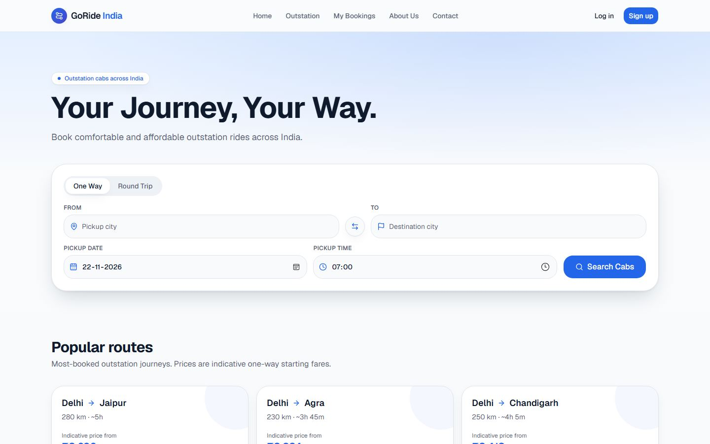

Full-stack app
GoRide India
An outstation cab booking platform: search a route, pick a car, see the fare up front, pay securely and ride.
- Type
- Full-stack web app
- Role
- Design & development
- Payments
- Razorpay (UPI, cards, netbanking)
- Hosting
- Vercel
- Status
- Live (demo build)

Visit live site ↗Screenshot of the live site. Click it to open the real thing.
Overview
The problem & the solution
Problem. Booking intercity cabs usually means phone calls, unclear pricing and hidden charges.
Solution. GoRide lets travellers choose one-way or round-trip, enter route, date and time, compare cars with per-km fares and see an upfront fare breakdown before paying online.
GoRide is a demo build with sample pricing. It demonstrates the complete booking flow rather than a live commercial operation.
Key features
- One-way & round-trip route search
- Popular routes with indicative fares
- Car selection with fare per km
- Upfront fare breakdown
- Razorpay payments — UPI, cards, netbanking
- Login, sign up and “My Bookings”
- Terms, privacy and cancellation policy pages
Need a booking platform?
I build booking, marketplace and payment-driven apps end to end.
Discuss your project →